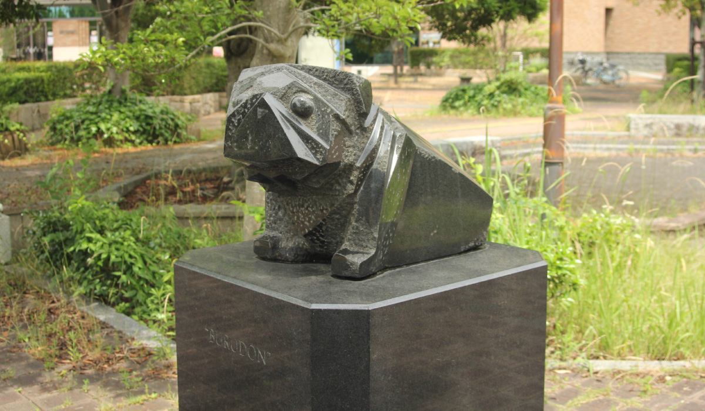

流 政之
流政之は刀鍛冶、装丁家、零戦パイロットなどの経歴をもち、彫刻だけにとどまらず作庭
や陶芸、家具デザインなども手がけた。60～70年代はアメリカで活躍。ニューヨークに拠
点を持って制作活動をした。世界貿易センターに存在した作品『雲の砦』など、彼の多く
の作品がアメリカに残されている。67年には米タイム誌で日本を代表する文化人として、
三島由紀夫、川端康成、丹下健三、黒沢明と一緒に紹介された。